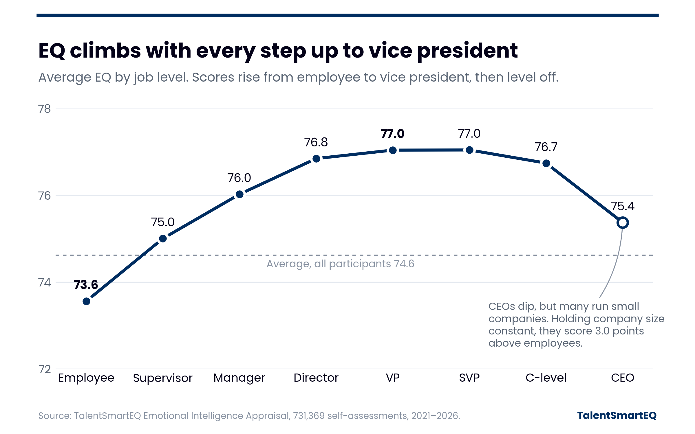

EQ & Leader Level
EQ climbs with every step of responsibility up to vice president. CEOs still score below every leadership level from manager up.

What the data shows
- Average EQ rises at every step of the management ladder, from employees (73.6) to vice presidents (77.0). Scores level off through senior vice president (77.0) and dip for C-level executives (76.7) and CEOs (75.4).
Leaders gain the most in managing themselves
EmployeesVice presidents
- Leaders score higher than employees on all four EQ skills. The biggest gain is in Self-Management, up 5.1 points from employee to vice president. The smallest is in Social Awareness, up 2.3 points.
How this compares to our 2005 findings
In 2005 we reported in Harvard Business Review that EQ peaked at the manager level and that CEOs scored lowest (“Heartless Bosses?”, Bradberry & Greaves). Two decades later, we still see EQ dip for CEOs: they score below every level from manager up. What has changed is how far the climb goes. EQ now keeps rising through vice president before it levels off.
Over the same years, companies changed what they look for in senior leaders. Research by Joseph Fuller, Stephen Hansen, Tejas Ramdas and Raffaella Sadun examined thousands of executive-search job descriptions over 17 years and found growing demand for social skills, including listening, empathizing, persuading and understanding others’ reactions, particularly in larger and more complex organizations. These skills are related to EQ, although the study did not measure EQ scores (“What Companies Want Most in a CEO: A Good Listener”).
Those social skills sit closest to Social Awareness: the ability to accurately pick up on other people’s emotions and understand what is really going on with them. In practice, that means listening closely, noticing tone and body language, and seeing a situation from another person’s point of view rather than only your own. In our data, it is also the skill that grows least from employee to vice president, 2.3 points compared with 5.1 for Self-Management. How Social Awareness develops at each level will be worth watching as expectations of leaders continue to change.
Where do you stand among your peers?
Keep exploring
 High & Low Scores by LevelExplore the data
High & Low Scores by LevelExplore the data
 What Explains EQ?Explore the data
What Explains EQ?Explore the data
 EQ & GenderExplore the data
EQ & GenderExplore the data
 EQ & Generational DifferencesExplore the data
EQ & Generational DifferencesExplore the data
Source: 732,170 Emotional Intelligence Appraisal self-assessments, 2021–2026, 640,784 of them with a reported job level. Scores are on a 0–100 scale.
Other variables: the only variable to have practical significance on its own was company size. People at smaller organizations score a little lower, but even comparing CEOs with other leaders at companies of the same size, CEOs score slightly lower.
2005 figures: Bradberry, T. & Greaves, J. (2005, December). Heartless Bosses? Harvard Business Review.
Executive-search research: Fuller, J., Hansen, S., Ramdas, T. & Sadun, R. (2021). The Demand for Executive Skills. NBER Working Paper 28959.
Copyright 2026 © TalentSmart Inc. All rights reserved.